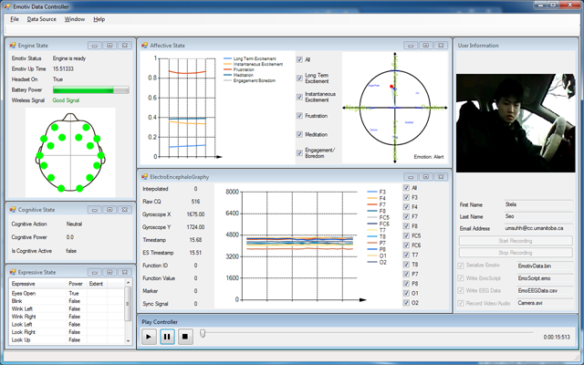
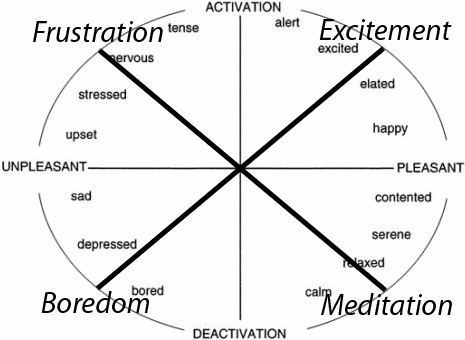
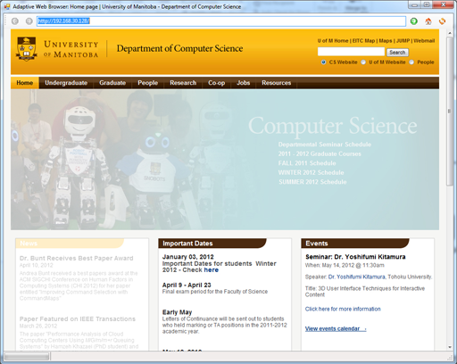
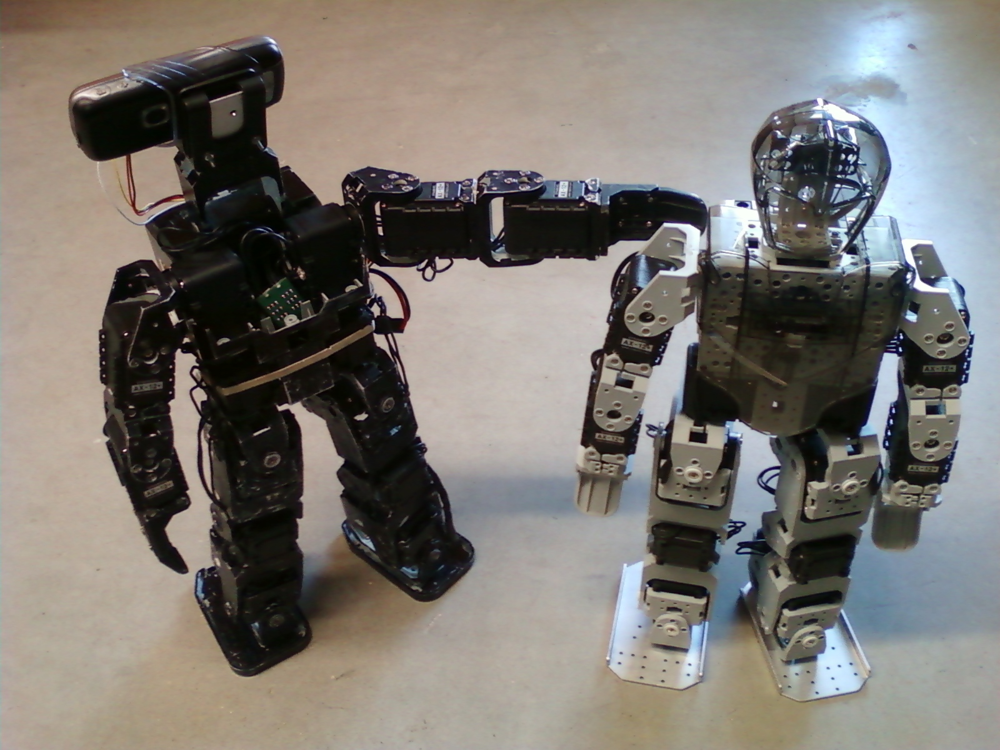
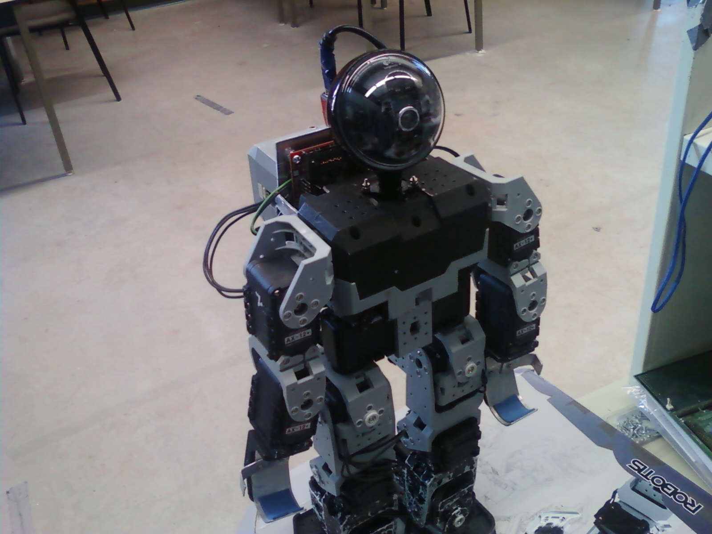
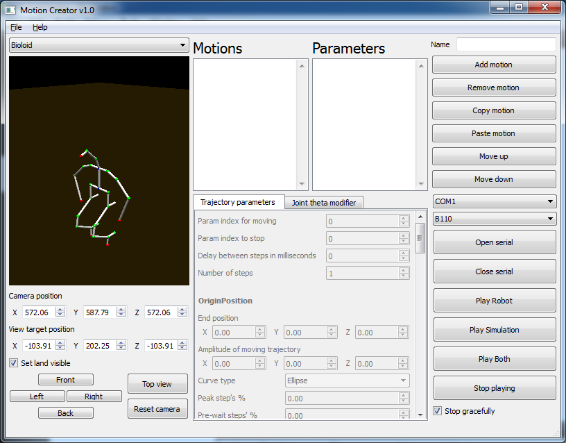

Bachelor of Computer Science Honours (Co-op) (2006-09 ~ 2012-10)
Summary
I entered University of Manitoba in September 2006 and graduated in October 2012. I received a Bachelor degree of Computer Science Honours (Co-op) with three specializations in artificial intelligent, database, and software engineering. For co-op work terms, I worked in Computational Discrete Mathematics Lab, TaiBotics, and Human-Computer Interaction / Human-Robot Interaction Laboratory. Outside of co-op work terms, I hanged out in Autonomous Agent Laboratory and broaden my research experiences and interests.
Human-Computer Interaction / Human-Robot Interaction Lab
For an year (third co-op work term, undergraduate honours project, and research assistant) I had worked as a research assistant in Human-Computer Interaction (HCI) / Human-Robot Interaction (HRI) Lab. I was interested in an affective computing and a web application. For the project, I had developed a prototype web application that reads people's emotion using Emotiv and changes its contents depends on the computed value via Emotiv SDK. Then, through a user study, I collected how people think about the role of affect recognition in web-capable applications.
[2013] Exploring the Role of Affect Recognition in Web-Capable Applications
Stela H. Seo, James E. Young, and Andrea Bunt. 2013. "Exploring the Role of Affect Recognition in Web-Capable Applications." GI '13 Poster Section Proceedings of Graphics Interface 2013. Regina, Saskatchewan, Canada.
 I developed a program that can record video as well as Electroencephalography (EEG) from the Emotiv. In addition, researchers can on and off various information displays for analysis purpose.
 Then, I used computed emotion variables via the Emotiv SDK to map current emotion of a user on the 2D circumplex model of affects.
 I implemented javascript that uses the emotion mapped on the model to change webpage's contents.
Unfortunately, the mapping did not work as we expected and the prototype web-application had some issues such as undesirable modification. On a bright side, through semi-structure interviews in a user study I was able to pull some interesting thoughts. They were introduced in the poster session of GI 2013.
Autonomous Agent Lab
[2011] Learning of Facial Gestures Using SVMs
Jacky Baltes, Stela Seo, Chi Tai Cheng, M.C. Lau, John Anderson. "Learning of Facial Gestures Using SVMs," Next Wave in Robotics: Communications in Computer and Information Science, 2011, vol. 212, pp. 147-154. Springer.
 At the end of the second year of B.C.Sc. Hons. program, I joined Autonomous Agent Laboratory (AALab) in University of Manitoba. As a junior research assistant, I worked under the supervision of Dr. Jacky Baltes and Dr. John Anderson. I helped senior students to build some motions such as walking and to program simple applications.
 As I started understanding the robot and its embedded system, I modified our robot's design. I mounted the robot's camera on the top of its body and the processing boards at the back.
 I developed various supportive applications such as parameterized motion generator. The parameterized motion generator calculates the angle of each joint by taking end-effectors trajectory. Its implementation is based on Denavit-Hartenberg Conversion.
Co-op Work Terms
Third co-op work term (2011-09 ~ 2011-12)
From my last co-op work term, for an year (co-op work term, undergraduate honours project, and research assistant) I had worked as a research assistant in HCI/HRI lab. Research detail is explained above.
[2013] Exploring the Role of Affect Recognition in Web-Capable Applications
Stela H. Seo, James E. Young, and Andrea Bunt. 2013. "Exploring the Role of Affect Recognition in Web-Capable Applications." GI '13 Poster Section Proceedings of Graphics Interface 2013. Regina, Saskatchewan, Canada.
Second co-op work term (2011-05 ~ 2011-08)
In my second co-op work term, I worked remotely at TaiBotics. As a lead programmer, I rewrote their visual robot-programming software in C# and implemented various additional features.
First co-op work term (2010-01 ~ 2010-04)
In my first co-op work term, I was hired as a research assistant.
I worked with Dr. John van Rees and Dr. Ben Li to prove the next level of friendship 3-hypergraphs using computational approach.
In other words, we computed the next step of friendship 3-hypergraphs using computing powers to prove their existence or non-existence at certain number of vertices.
I was involved in this project as a junior programmer who helps to code the concept and manage the program to compute friendship 3-hypergraphs.
Along the way, I was able to improve the performance of computation using isomorphism theorem.
[2012] Friendship 3-hypergraphs
P.C. Li, G.H.J. van Rees, Stela H. Seo, and N.M. Singhi. "Friendship 3-hypergraphs," Discrete Mathematics, vol. 312, no.11, 2012, pp. 1892-1899. Elsevier.
Projects
Publications
[2013] Exploring the Role of Affect Recognition in Web-Capable Applications
Stela H. Seo, James E. Young, and Andrea Bunt. "Exploring the role of affect recognition in web-capable applications," Graphics Interface Conference, Poster Session, May 2013. Regina, Saskatchewan, Canada.
[2012] Friendship 3-hypergraphs
Pak Ching Li, G. H. John van Rees, Stela H. Seo, Navin M. Singhi. "Friendship 3-hypergraphs," Discrete Mathematics, vol.312, no.11, pp.1892-1899, 2012. Elsevier.
[2012] Exploring User Attitudes Toward Affect Recognition in Web-capable Applications
Stela Seo, James E. Young, Andrea Bunt. "Exploring user attitudes toward affect recognition in web-capable applications," Technical Report, 2012. University of Manitoba.
[2011] Learning of Facial Gestures Using SVMs
Jacky Baltes, Stela Seo, Chi Tai Cheng, M.C. Lau, John Anderson. "Learning of facial gestures using SVMs," Next Wave in Robotics: Communications in Computer and Information Science, vol.212, pp.147-154, 2011. Springer.